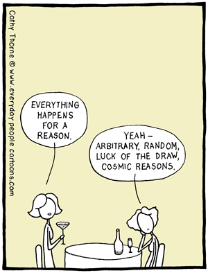

Reasoned Solving

What is Reasoned Solving?
You have probably heard the term "Algebraic Reasoning" at some point in your life. As a have pointed out in more than one occasion throughout my Teaching Algebra site (for instance, read here), the meaning of words is sometimes not so clear and we just take them as they are used in a language. In this case, and in the context that we are using the word Algebra, we can think of "Algebraic Reasoning" as strategies aimed at using algebra to see connection between concrete quantities and general relationship so as to be able to solve problems for which manipulation of concrete numbers become too cumbersome or tedious -- sometimes even impossible!.
"Algebraic Reasoning" is intimately related to Reasoned solving in that when we use Reasoned solving we view a problem as a series of logical steps, one after the other, until a goal is achieved. The key feature here is that each step is logically connected with its previous and next step, forming a chain of logical arguments that clearly shows how to solve a problem. Hence, both Algebraic Reasoning and Reasoned solving abstract and connected a series of logical or mathematical statements into a coherent whole. To make these statements more concretely, let us next think about the process of equation solving and how it is connected both with logic and algebra. As stated before, the main idea is to generalize algebra to solve increasingly more complicated problem but trying to build on student's previous understanding of arithmetic.
As stated by the authors of Focus in High School Mathematics, Reasoning and Sense Making: "Equation solving is a goal-oriented process of logical argument; it is based on general principles of equality and procedures of algebraic manipulation consistent with the rules of arithmetic. Problem solving with equations should include careful attention to increasingly difficult problems that span the border between arithmetic and algebra. Such problems can help students view algebra as a sense-making activity that extends one’s problem-solving skills into domains in which reasoning as done in arithmetic becomes too complicated or cumbersome to carry out. Seeing the essential parallels between algebraic and arithmetic solution methods can help students realize that algebra is not something totally new but simply a more powerful tool for dealing with problems that are hard to approach with arithmetic by itself".
Examples
Which one is heavier?
Consider the following situation: there is a pile of twelve coins, all of equal size. Eleven are of equal weight. One is of a different weight. Your challenge is to, in three weighings, find the unequal coin and determine if it is heavier or lighter.
This is a classical puzzle that builds on the intuition of what it means for quantities to be equal while providing a concrete setting (12 coins, all identical) where students can reason with or without algebra. This is in fact a great problem for transitioning to Algebra from Arithmetic while encouraging Reasoned Solving. First thing you need to do is to label all coins from 1 to 12. Next, place any four coins on the left pan of the scale and any four (other than the ones previously chosen) on the right pan. Say you place coins 1,2,3,4 on the left pan and coins 5,6,7,8 on the right pan. If the scales balances, then you immediately know that the heavier coin is not any of 1,2,3,4,5,6,7 and 8. What would be an algebraic reason for this? (Hint: let x = weight of one coin (not the heaviest)). In that case, take the remaining 4 coins, i.e., coins labeled 9,10,11,12 and place coins 9,10 on the left pan and 11,12 on the right pan. One side will be heavier than the other and you will immediately see which. Say the left side is heavier. The final step is to remove coin from the right pan and take coins from the left pan (coins 9,10) and place them on each side. Voilà!, you have found the heavier coin. Note that we used exactly three weighings, find the unequal coin.
There are more details to this example which need to be work out: (1) what if the coins do not balance on the first try? (2) what if the unequal coin is not heavier but actually lighter? and (3) can you develop an algebraic framework that will work for any number of coins? I will leave these details to the reader as a fun exercise. Note that there are further connections with other strategies for teaching algebra, for example, can you develop a rule that will tell you the minimum number of weighings necessary to find one unequal coin among n coins? (Hint: the answer is a logarithmic function). This is directly linked to strategies such as Mindful manipulation and Linking expressions and functions.
Why Reasoned Solving is important for the teaching of Algebra in grades 7-12?
Trying to learn a new subject is often a difficult task. It is even more difficult if one does not posses the appropriate background or foundation to think about new issues. Nowhere in the filed of human inquiry is this more evident that in Mathematics where we increasingly build on previous knowledge as we explore new frontiers and Mathematical Worlds. Moreover, previous knowledge is not enough if it perceived to be disconnected from what comes next. As teachers we need to leverage our student's previous knowledge and show them how these connects to new ideas. An example previously discuss is that of Arithmetic and Algebra where students first learn to add numbers concretely (1+2=3) and then move to abstract quantities where they perform essentially the same kind of operations (x+2x = 3x).
Reasoned solving in Algebra teaching make these ideas concrete. Teachers in grades 7-12 ought to present mathematical subject as a sequence of logical, interconnected steps rather than an array of ideas each working on its own with no evident connection. The importance of reasoned solving is that students are made aware of these connections, which makes it easier to understand new subjects one at the time. Not only that but they also gain new mathematical perspectives and hopefully a better appreciation for what Mathematics is and what it entails. What we ultimately want to avoid is to educate people so that they end up thinking something like the following cartoon!:

Further Resources
There is till much to be done when it comes to Reasoned solving in Algebra. This is why this section provides links to more resources to help you think about Reasoned solving both in your algebraic work and when preparing teaching lessons.